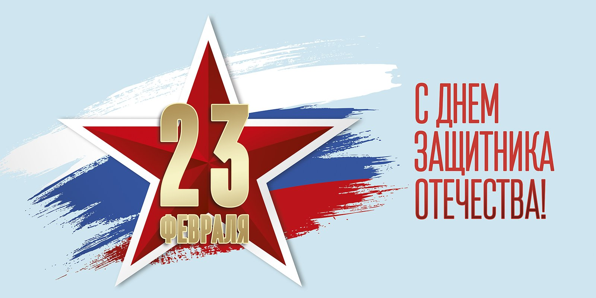

Поздравляем c праздником
Примите наши искренние поздравления с 23 февраля! Желаем, чтобы энтузиазм, задор и вера в свои силы вас никогда не покидали, а ангел-хранитель оберегал на всех жизненных дорогах! В этот праздник мы отдаем дань уважения и чтим память
всех воинов, которые защищали нашу родную землю от врагов. Пусть все войны останутся в прошлом, а сражения будут только на мирном фронте. В День защитника Отечества желаем всегда оставаться настоящим воином: мужественным и
сильным, решительным и находчивым, умело решать все задачи и преодолевать любые жизненные препятствия. Желаем вам благополучия, долголетия, неувядающей энергии и стального здоровья. Пусть вас во всем сопровождает успех, каждый
день будет счастливым, освещенным радостными событиями, встречами с настоящими друзьями, нежной любовью близких и родных людей!
